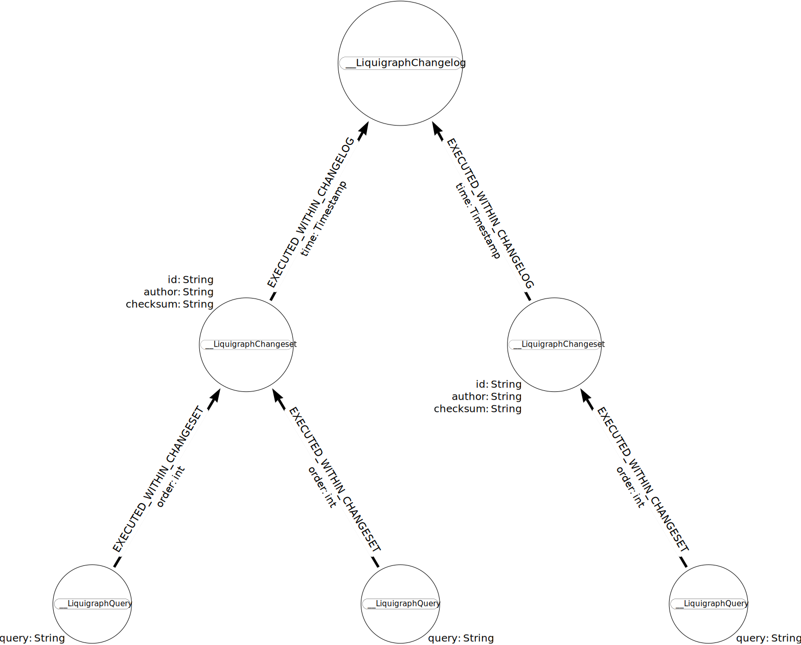

Reference⚓
Concepts⚓
Change logs⚓
A change log is a collection of change sets.
Liquigraph needs to be configured with a single change log, sometimes known as main change log.
1 2 3 4 5 | |
A change log file may include other relative change log files and/or define change sets. Liquigraph will pre-process such inclusions and resolve them to a single change log document.
The following example change log assume this folder structure:
.
├── 1.0
│ └── changelog.xml
├── 2.0
│ └── changelog.xml
└── changelog.xml
1 2 3 4 5 6 7 | |
In that example, the change sets of 1.0/changelog.xml will be executed in declaration order,
before the ones of 2.0/changelog.xml.
Info
Contrary to Liquibase, Liquigraph does not support folder import.
Change sets⚓
Change sets are uniquely identified by the combination of ID and author.
Note
IDs must remain unique within a change log file, this is a requirement of the XML specification. ID duplicates are allowed across files.
Change sets are globally ordered by their execution (transaction) timestamp.
They define at least 1 Cypher query.
Warning
Liquigraph only supports XML. As a consequence, any query that includes an XML entity (such as < or >) needs to
be surrounded with <![CDATA[ and ]]> blocks.
❌ Invalid change set:
1 2 3 | |
1 2 3 | |
Transactionality⚓
Each change set is bound to its own transaction (unless it defines postconditions).
If any of the queries of a given change set fails, the transaction fails, and Liquigraph execution aborts. A change set failure does not affect the result of the execution of the previous change sets.
Immutability and incrementality⚓
By default, change sets are:
- immutable: their queries are not allowed to change (Liquigraph will reject the change set)
- incremental: they are executed only once
To achieve these, Liquigraph stores the history of executed change sets in the same database.

In particular, the checksum attribute on __LiquigraphChangeset nodes enables Liquigraph to detect whether a change
set has changed since its last execution and react accordingly.
While the common migration strategy is to add up change sets, not modify existing ones,
you can set the run-on-change XML attribute as follows to allow for change set modifications:
1 2 3 | |
Note
This kind of change sets will only run again if and only if their queries change.
If you need change sets to always run, you can set the run-always XML attribute as follows:
1 2 3 4 5 6 | |
Caution
Even if run-always is set to true, the change set is still not allowed to change.
If the change set needs to be mutable, you need to set run-on-change as well.
Conditional execution⚓
By default, every change declared from the main change log file are potential candidates for execution.
As explained before, what will run depends on the persisted history graph.
That being said, there are additional ways to exclude change sets from being executed, regardless of the persisted history.
Execution contexts⚓
Liquigraph supports execution contexts. They are simple strings, specified as a Liquigraph configuration parameter.
./liquigraph-cli.sh --execution-contexts="foo,bar" # [...] other CLI options omitted for brevity
<configuration>
<!-- [...] other configuration settings omitted for brevity -->
<executionContexts>foo,bar</executionContexts>
</configuration>
Simply add this to your application.properties:
liquigraph.executionContexts=foo,bar
On the other hand, change sets declare 0 to many execution contexts, as follows:
1 2 3 | |
They will be matched under either of the following circumstances:
- Liquigraph is configured to run without any execution context
- The change set does not declare any execution context
- At least one of the execution contexts declared by the change set matches one of the configured Liquigraph execution contexts
Preconditions⚓
Change sets can optionally define preconditions. As their name suggests, these are custom checks that are run before the actual change set queries are executed.
These custom checks are expressed as Cypher queries. The queries must return a single row, with a single column named result.
1 2 3 4 5 6 | |
The checks can be expressed as several Cypher queries, combined with boolean "XML operators" (<and> and <or> are supported).
1 2 3 4 5 6 7 8 9 10 11 12 | |
As indicated in the snippets, the if-not-met attribute must be defined as well.
This attribute defines the error handling strategy to follow when the precondition fails.
Three strategies are currently implemented:
CONTINUE: ignore the precondition error, skip the corresponding change set queries executionMARK_AS_EXECUTED: ignore the precondition error, skip the corresponding change set but persist the change set in the history graph as if it was executedFAIL: fail the transaction, report the precondition error (Liquigraph execution stops at this point)
<changeset id="create-sentence" author="florent.biville">
<precondition if-not-met="MARK_AS_EXECUTED">
<or>
<query>MATCH (n) RETURN COUNT(n) % 2 = 0 AS result</query>
<and>
<query>MATCH (n:Sentence) RETURN n.text CONTAINS 'e' AS result</query>
<query>MATCH (n) RETURN COUNT(n) % 2 = 1 AS result</query>
</and>
</or>
</precondition>
<query>CREATE (n:Sentence {text:'Hello monde!'})</query>
</changeset>
Postconditions⚓
Postconditions allow to run the queries of a change set by batch, until there is no more batch to execute.
This can be useful if the change set queries affect many data elements in the graph. Without postconditions, such queries can cause memory overconsumption, or worse, crash the Neo4j server.
Warning
Change sets with postconditions do not run in a single transaction. There are instead as many transactions as batches to execute. As a consequence, if a batch execution fails, the previous batch transactions are not affected. They are committed to the graph.
In the following example, the change set single query deletes relationships 1000 by 1000, until the postcondition query
returns false.
Like preconditions, the custom check is expressed as Cypher queries. The queries must return a single row, with a single column named result.
The check can be expressed as several Cypher queries, combined with boolean "XML operators" (<and> and <or> are supported).
1 2 3 4 5 6 | |
Configuration⚓
General considerations⚓
Connection URI⚓
Starting with version 3, Liquigraph relies on the official JDBC driver for Neo4j. As a consequence, Liquigraph expects the connection URI to be specified in the JDBC format. The following sections cover the URI variants, depending on:
- the version of the Neo4j server
- the transport (HTTP, Bolt, embedded)
- if applicable, the server typology (in-cluster vs. standalone)
You can append parameters to the connection URI (such as database), as documented here.
Finally, the driver class name needs to be specified only when using the Spring Boot module.
Warning
- Starting with Liquigraph version 3, the embedded transport is not supported anymore.
- Managed services such as Neo4j Aura only support the Bolt transport.
| Transport | Typology | Expected URI form | Driver class name |
|---|---|---|---|
| Bolt | standalone | jdbc:neo4j:bolt:HOST:port |
org.neo4j.jdbc.bolt.BoltDriver |
| Bolt | standalone | jdbc:neo4j:bolt+s:HOST:port |
org.neo4j.jdbc.bolt.BoltDriver |
| Bolt | standalone | jdbc:neo4j:bolt+ssc:HOST:port |
org.neo4j.jdbc.bolt.BoltDriver |
| Bolt | in-cluster | jdbc:neo4j:neo4j:HOST:port |
org.neo4j.jdbc.boltrouting.BoltRoutingNeo4jDriver |
| Bolt | in-cluster | jdbc:neo4j:neo4j+s:HOST:port |
org.neo4j.jdbc.boltrouting.BoltRoutingNeo4jDriver |
| Bolt | in-cluster | jdbc:neo4j:neo4j+ssc:HOST:port |
org.neo4j.jdbc.boltrouting.BoltRoutingNeo4jDriver |
| HTTP | N/A | jdbc:neo4j:http:HOST:port |
org.neo4j.jdbc.http.HttpDriver |
| HTTP | N/A | jdbc:neo4j:https:HOST:port |
org.neo4j.jdbc.http.HttpDriver |
Caution
neo4j+s, neo4j+ssc, bolt+s and bolt+ssc Neo4j 4.x schemes are only supported by the JDBC driver version 4.0.3 or later. Earlier 4.0.x versions will not work properly.
Tip
If you want to connect to a Neo4j Aura instance, make sure to use the form jdbc:neo4j:neo4j+s://HOST
(and specify org.neo4j.jdbc.boltrouting.BoltRoutingNeo4jDriver if you are a Spring Boot user)
| Transport | Typology | Expected URI form | Driver class name |
|---|---|---|---|
| Bolt | standalone | jdbc:neo4j:bolt:HOST:port |
org.neo4j.jdbc.bolt.BoltDriver |
| Bolt | in-cluster | jdbc:neo4j:bolt+routing:HOST:port |
org.neo4j.jdbc.boltrouting.BoltRoutingNeo4jDriver |
| HTTP | N/A | jdbc:neo4j:http:HOST:port |
org.neo4j.jdbc.http.HttpDriver |
| HTTP | N/A | jdbc:neo4j:https:HOST:port |
org.neo4j.jdbc.http.HttpDriver |
Multi-tenancy support⚓
Starting with 4.x, Neo4j is multi-tenant.
Each Neo4j server may host 2 (system and the default neo4j) to many databases.
The target database is configured through the connection URI
database parameter.
For instance, here is a connection URI that connect to Neo4j with the Bolt transport on the default port,
and against the some-database database: jdbc:neo4j:bolt:example.com?database=some-database.
Note
Liquigraph always persists the history graph in the same database as the one the migrations target. There is currently no way to store the history graph in another database.
Clients⚓
CLI⚓
Usage: liquigraph [options] [command] [command options]
Options:
--help, -h
Get this help
--version, -v
Show the version
Commands:
dry-run Simulate the execution of Liquigraph migrations
Usage: dry-run [options]
Options:
* --changelog, -c
Master Liquigraph changelog location.
Prefix with 'classpath:'
if location is in classpath
--database, -db
Graph DB database
* --dry-run-output-directory, -d, --output-directory
Output directory path into which changeset queries will be
written.
--execution-contexts, -x
Comma-separated list of Liquigraph execution contexts
Default: <empty string>
* --graph-db-uri, -g
Graph JDBC URI:
- jdbc:neo4j:http://host:port/
- jdbc:neo4j:https://host:port/
- jdbc:neo4j:bolt://host:port/
--password, -p
Graph DB password
--username, -u
Graph DB username
run Execute Liquigraph migrations
Usage: run [options]
Options:
* --changelog, -c
Master Liquigraph changelog location.
Prefix with 'classpath:'
if location is in classpath
--database, -db
Graph DB database
--execution-contexts, -x
Comma-separated list of Liquigraph execution contexts
Default: <empty string>
* --graph-db-uri, -g
Graph JDBC URI:
- jdbc:neo4j:http://host:port/
- jdbc:neo4j:https://host:port/
- jdbc:neo4j:bolt://host:port/
--password, -p
Graph DB password
--username, -u
Graph DB username
Maven plugin⚓
Please check the reference site:
Spring Boot starter⚓
Available configuration options:
| Property name | Type | Description | Default value (if any) |
|---|---|---|---|
liquigraph.change-log |
String |
Path to change log file | classpath:/db/liquigraph/changelog.xml |
liquigraph.enabled |
boolean |
Whether Liquigraph is enabled | true |
liquigraph.execution-contexts |
String[] |
Liquigraph execution contexts | [] |
liquigraph.password |
String |
Neo4j password | N/A |
liquigraph.url |
String |
JDBC URL of the Neo4j server | N/A |
liquigraph.user |
String |
Neo4j username | N/A |